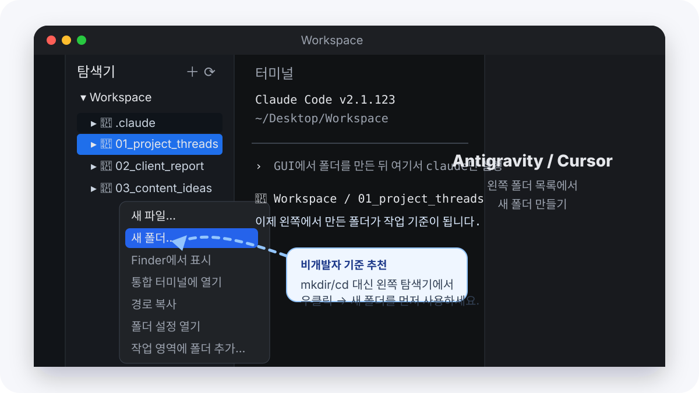

오늘 할 일은 코딩이 아닙니다. 폴더를 하나 열고, Claude Code에게 “이 파일들을 읽고 결과물을 만들어줘”라고 시키는 연습입니다. 코드 문법보다 어떻게 말로 맡기는지만 보면 됩니다.
프로젝트 화면은 이렇게 생겼습니다
첫 프로젝트는 “폴더를 열고 → Claude에게 시키고 → 결과 파일이 생기는 것”만 확인하면 됩니다.
정상 화면: 왼쪽에 파일 목록이 보이면 프로젝트 폴더를 제대로 연 상태입니다.폴더 기준: 업무별로 폴더를 나누면 Claude가 어떤 일을 하는지 덜 헷갈립니다.
저도 처음엔 Claude Code로 뭘 만들어야 할지 몰랐어요. 그냥 채팅처럼 쓰다가 어느 날 "혹시 이것도 돼?"라고 물었는데 됐습니다. 그게 시작이었어요. 크롤링 도구를 처음 만들고 나서, 매주 몇 시간씩 하던 자료 수집이 버튼 하나로 바뀌었습니다. 그 경험이 있고 난 뒤론 업무를 볼 때 항상 "이것도 자동화할 수 있지 않을까?"라는 시선으로 보게 됐어요.
오늘의 목표
이 가이드에서 만들 것은 파일 여러 개를 한번에 처리하는 나만의 도구입니다.
지금까지
파일을 하나하나 열어서 읽고
→ 복붙해서 Claude에 넣고
→ 결과 복붙해서 저장
파일 10개면 10번 반복
오늘 이후
폴더에서 claude 실행
→ "이 폴더 파일 전부 처리해줘" 한 마디
→ 결과 파일 자동 생성
파일 100개도 같은 시간
예제 시나리오 — 하나를 골라서 따라해보세요
직업이나 업무 상황에 맞는 것을 고르세요. 방법은 다 똑같습니다.
📝 회의록 요약
텍스트 파일로 저장된 회의록들을 한번에 읽어서, 날짜·결정사항·액션아이템으로 정리된 요약본을 자동으로 만들기.
📊 엑셀·CSV 분석
여러 개의 데이터 파일을 읽어서 월별·항목별로 비교 분석하고, 결과를 보고서 형식으로 저장하기.
📁 파일 일괄 정리
폴더 안의 파일들을 특정 규칙으로 분류하거나, 파일명을 통일된 형식으로 일괄 변경하기.
어떤 걸 골라야 할지 모르겠다면
회의록 요약부터 시작하세요. 지금 당장 쓸 파일이 없어도 됩니다. 연습용 텍스트 파일을 직접 만들면서 따라해도 충분히 익힐 수 있습니다.
시작 전 확인
터미널에서 claude --version을 입력했을 때 버전이 나와야 합니다. 안 된다면 2편 가이드를 먼저 확인하세요.
메모장이나 텍스트 편집기로 간단한 내용의 .txt 파일을 2개 만들어두면 됩니다. Step 2에서 안내합니다.
프로젝트 폴더 세팅
Claude Code는 폴더 단위로 일합니다. 폴더 하나 만들고 CLAUDE.md 적어두는 게 전부입니다.
왜 폴더부터 만드나요?
Claude Code를 실행하면 현재 폴더 안의 파일을 모두 볼 수 있습니다. 반대로 폴더 바깥 파일은 보이지 않습니다. 그래서 작업별로 폴더를 하나 만들어두는 게 기본 습관입니다.
저는 처음에 바탕화면에서 그냥 claude를 실행했는데, 온갖 파일이 다 보여서 헷갈렸어요. 지금은 업무마다 폴더를 하나씩 만들어서 거기서 시작합니다. 훨씬 깔끔해요.
💡 .md 형식이 처음이라면?
2편에서 자세히 다뤘습니다. 간단히 말하면, #으로 제목, -으로 목록을 표시하는 텍스트 문서 형식입니다. Claude가 읽기 좋고, Notion·Obsidian과도 호환됩니다.
폴더 만들기 — 먼저 GUI에서 하세요
비개발자라면 처음부터 mkdir, cd를 외울 필요 없습니다. Antigravity/Cursor/VS Code 왼쪽 탐색기에서 우클릭 → 새 폴더로 만드는 게 더 자연스럽습니다.

추천 흐름: 왼쪽 Workspace에서 우클릭 → 새 폴더 → 프로젝트 이름 입력. 터미널 명령어는 막혔을 때만 대안으로 보면 됩니다.
왼쪽에 파일·폴더 목록이 보이면 준비된 상태입니다. 아직 없다면 빈 Workspace 폴더를 하나 열어두세요.
왼쪽 폴더 영역에서 우클릭 → 새 폴더를 누르고 my-project처럼 이름을 정하세요.
터미널이 익숙한 사람만 대안으로 사용:mkdir ~/Desktop/my-project
처음에는 GUI로 만드는 쪽이 실수도 적고 이해하기 쉽습니다.
방금 만든 폴더에 처리할 파일을 2~3개 복사해두세요.
없다면 메모장에 아무 내용이나 입력하고 sample-1.txt, sample-2.txt로 저장해도 됩니다.
팁: 파일을 터미널 창에 드래그하면 경로가 자동 입력됩니다
Claude Code를 실행해서 CLAUDE.md를 만들어달라고 합니다.
claude
실행 후 아래를 입력하세요.
이 폴더에서 파일 처리 작업을 할 거야. 폴더를 살펴보고 CLAUDE.md 파일을 만들어줘. 한국어로 답변하고, 결과물은 항상 output/ 폴더에 저장해줘.
계획 확인 후 "진행해줘"라고 입력하면 실제로 실행됩니다.
파일 이름 변경처럼 되돌리기 어려운 작업은 항상 계획을 먼저 확인하는 습관을 들이세요.
"이게 보이면 됩니다"
작업이 완료되면 아래 두 가지를 확인하세요.
✅ output/ 폴더에 결과 파일이 생겼다
터미널에서 ls output/을 입력하거나, Finder/탐색기에서 직접 폴더를 열어서 확인하세요.
✅ 결과 파일 내용이 원하는 형식이다
텍스트 편집기로 결과 파일을 열어보세요. 형식이 마음에 안 들면 Claude에게 "이 부분을 이렇게 바꿔줘"라고 피드백하면 됩니다.
도구로 발전시키기
한 번 만든 것을 반복해서 쓸 수 있게 만드는 게 진짜 자동화입니다.
처음엔 CLAUDE.md에 작업 방식을 다 써두려 했는데, 설명이 길어질수록 매 대화마다 컨텍스트를 소비하는 게 느껴졌어요. 그래서 처음에는 CLAUDE.md에 꼭 필요한 규칙만 적었습니다. 반복 작업이 많아지면 나중에 Skills로 분리하면 됩니다.
CLAUDE.md — 가볍게 유지하기
CLAUDE.md는 "이 프로젝트가 뭔지" 알려주는 곳입니다. 업무 방식 레시피를 쌓는 곳이 아닙니다.
CLAUDE.md에 넣을 것
스킬로 만들 것
input/, output/ 폴더 위치
파일 처리 순서 · 출력 형식
결과물 저장 규칙 (파일명 형식 등)
매주 반복하는 리포트 루틴
주의사항 · 금지 행동
여러 프로젝트에서 공통으로 쓰는 패턴
Claude에게 분류 물어보기
방금 정한 처리 방식 중에 CLAUDE.md에 넣을 것과 스킬로 따로 만들 것을 나눠줘.
분류해드릴게요.
CLAUDE.md에 추가: input/ 폴더의 파일을 읽어 output/에 저장, 파일명은 날짜_원본명 형식
스킬로 만들 것: 처리 순서(읽기→요약→저장), 출력 형식(표/목록/Markdown) — 다른 프로젝트에서도 쓸 수 있고, CLAUDE.md를 무겁게 만들지 않습니다.
반복 업무 패턴을 스킬로 만드는 방법은 8편 스킬 가이드에서 자세히 다룹니다.
결과물 형식 다듬기
처음 나온 결과가 완벽하지 않아도 됩니다. 피드백으로 원하는 형식에 가까워집니다.
상황
이렇게 말하면 됩니다
형식이 마음에 안 들 때
"결과 형식을 바꿔줘. 표 대신 목록으로"
내용이 너무 길 때
"각 항목을 3줄 이내로 줄여줘"
빠진 내용이 있을 때
"각 항목 끝에 중요도 (상/중/하)를 추가해줘"
저장 형식을 바꾸고 싶을 때
"결과를 md 말고 txt로 저장해줘"
새 파일이 들어왔을 때
"output/ 폴더 비우고 다시 처리해줘"
다음번에 쓰는 법
세팅이 끝난 폴더는 이렇게 쓰면 됩니다.
1
파일 추가
처리할 파일을 폴더에 복붙
→
2
claude 실행
터미널에서 해당 폴더로 이동 후 claude
→
3
한 마디
"새 파일 들어왔어. 처리해줘"
→
4
결과 확인
output/ 폴더에서 확인
업무별로 폴더를 따로 만들되, CLAUDE.md는 가볍게
예: meeting-summary/, sales-analysis/, weekly-report/
각 폴더의 CLAUDE.md에는 "이 폴더가 뭘 하는 곳인지" (경로·규칙)만 적어두세요. 처리 방식은 스킬로 분리하면 여러 폴더에서 재사용할 수 있고 컨텍스트도 가볍습니다.
잘 되고 있는지 확인하는 법
✅ 잘 되고 있다면
한 번 설명한 것을 다시 설명하지 않아도 됩니다. 파일만 넣으면 Claude가 알아서 처리합니다.
⚠️ 뭔가 이상하다면
/compact로 대화를 정리하거나, /clear로 초기화 후 @CLAUDE.md 읽고 시작해줘라고 하세요.
다음 도전 — 크롤링·분석 도구
파일 처리를 익혔다면 이제 "자동으로 데이터를 가져오는" 단계로 넘어갈 수 있습니다.
저한테 진짜 시간을 줄여준 건 크롤링 도구였어요. 매주 특정 사이트에서 데이터를 수집해야 했는데, 그게 몇 시간씩 걸렸거든요. Claude Code에게 "이 사이트에서 이 데이터를 가져오는 도구 만들어줘"라고 했더니 Python 스크립트를 만들어줬습니다. 저는 코드를 하나도 이해 못해도 됐어요. 그냥 실행하기만 하면 됐으니까요.
할 수 있는 것들
🕷️ 크롤링 도구
특정 웹사이트에서 정기적으로 데이터를 가져오는 도구. 가격 모니터링, 채용공고 수집, 뉴스 클리핑 등에 씁니다.
📊 데이터 분석 도구
특정 형식의 파일을 받으면 정해진 분석을 자동으로 실행하는 도구. 매주 같은 형식의 보고서를 받는다면 특히 유용합니다.
📧 알림 도구
특정 조건이 충족되면 이메일이나 슬랙으로 알림을 보내는 도구. 가격 변동, 새 공고 등록, 특정 키워드 등장 등.
🔄 자동화 파이프라인
데이터 수집 → 분석 → 보고서 생성 → 저장을 한 번에 처리하는 파이프라인. 주간 보고 업무를 완전히 자동화할 수 있습니다.
크롤링 도구 만들기 — 첫 번째 시도
코드 지식이 전혀 없어도 됩니다. Claude에게 원하는 것을 말하면 됩니다.
이렇게 시작하면 됩니다
파이썬으로 간단한 크롤링 도구를 만들어줘.
목표: [사이트 이름]에서 [원하는 데이터]를 가져오기
출력: CSV 파일로 저장
조건: 실행하면 바로 되도록, 설치 안내도 같이 알려줘
크롤링 도구를 만들겠습니다.
crawler.py 파일을 생성했습니다.
실행 방법:
1. pip install requests beautifulsoup4
2. python crawler.py
결과가 output.csv에 저장됩니다.
주의: 모든 사이트가 크롤링을 허용하지는 않습니다
사이트의 robots.txt와 이용약관을 먼저 확인하세요. 개인 학습·연구 목적으로만 사용하고, 서버에 과부하를 주지 마세요.
처음이라면 이 순서로 해보세요
매주 똑같이 하는 것, 시간이 오래 걸리는 것, 실수가 나오는 것 중 하나를 고르세요.
"나는 매주 [이 작업]을 하는데, Claude Code로 자동화할 수 있어?"라고 물어보세요. 가능 여부와 방법을 먼저 알려줍니다.
처음부터 완전 자동화를 목표로 하면 어렵습니다. "데이터 수집만" → "분석만" → "저장만" 순서로 하나씩 만들어가세요.
잘 모르겠으면 그냥 물어보면 됩니다
"나는 [직업]인데, Claude Code로 가장 시간을 아낄 수 있는 자동화가 뭐야?"라고 물어보세요. 내 업무 맥락에 맞는 아이디어를 먼저 받고, 거기서 시작하면 됩니다.
막혔을 때 해결법
프로젝트 진행 중 자주 나오는 상황들입니다.
자주 막히는 상황들
❓ Claude가 파일을 못 읽어요 / "파일이 없다"고 해요▶
원인: Claude Code가 다른 폴더에서 실행되고 있습니다.
1. Claude Code를 종료합니다 (/exit)
2. 먼저 GUI 왼쪽 탐색기에서 올바른 프로젝트 폴더를 열고, 그 안에서 터미널을 다시 엽니다.
claude
3. 다시 "이 폴더에 뭐가 있어?"라고 물어보세요. 파일 목록이 나오면 올바른 위치입니다.
터미널 이동 명령어(cd ...)는 GUI에서 폴더를 제대로 열기 어려울 때만 대안으로 사용하세요.
❓ 결과물 형식이 매번 달라져요▶
원인: 원하는 형식이 CLAUDE.md에 명확하게 적혀 있지 않습니다.
원하는 출력 예시를 한 번 직접 만들어서 CLAUDE.md에 넣어주세요.
CLAUDE.md에 결과물 형식 예시를 추가해줘. 내가 원하는 형식은 이거야:
[원하는 형식을 직접 작성해서 붙여넣기]
형식 예시가 있으면 Claude가 훨씬 일관되게 출력합니다.
❓ 파이썬 스크립트를 만들었는데 실행이 안 돼요▶
오류 메시지를 그대로 Claude에게 보여주세요. 해결책을 바로 알려줍니다.
이런 오류가 나: [오류 메시지 복붙] 어떻게 해결해?
가장 흔한 오류는 패키지 미설치입니다. Claude가 pip install [패키지명] 형태로 알려줄 겁니다.
pip가 뭔지 몰라도 됩니다
"pip install이 안 돼"라고 하면 해결 방법을 단계별로 알려줍니다.
❓ 작업을 중간에 멈추고 싶어요 / 잘못 진행되는 것 같아요▶
1. 즉시 중단:Ctrl+C
2. 방금 한 것 되돌리기:Esc Esc (두 번 빠르게)
3. 큰 작업 전에는:Shift+Tab × 2 로 Plan Mode에서 계획 먼저 확인
파일 이름 변경이나 삭제 작업은 항상 계획 먼저
"실행하기 전에 계획만 먼저 보여줘"라고 하는 습관을 들이면 실수를 많이 줄일 수 있습니다.
❓ 뭘 만들어야 할지 모르겠어요▶
Claude에게 직접 물어보는 게 가장 빠릅니다.
나는 [직업/부서]인데, 매주 반복하는 업무가 [이것]이야. Claude Code로 시간을 가장 많이 아낄 수 있는 자동화 아이디어 5가지 알려줘. 지금 당장 만들 수 있는 것부터 순서대로.
막히면 그냥 물어보면 됩니다
이 가이드 제작자 쓰레드 계정에 DM 주세요. 어떤 업무를 자동화하려는지 알려주시면 같이 생각해봅니다.
시리즈 완주 — 수고하셨습니다 🎉
3편 시리즈 완료!
Claude Desktop 설치 → Claude Code 설치 → 첫 프로젝트 완성. 비개발자로서 여기까지 오는 게 쉽진 않았을 겁니다. 이제 진짜 업무에 써볼 차례입니다.
여기서 어디로 가면 될까요?
✍️ 4편 — 프롬프트
Claude에게 잘 전달하는 법을 배웁니다. 구체적인 정보 3가지만 주면 결과가 달라집니다.
🗓 4월 20일 공개
🗂 5편 — 워크스페이스
업무별 폴더 구조를 한 번 잡아두면, 매 세션마다 설명 없이도 Claude가 맥락을 파악합니다.
🗓 4월 20일 공개
🔌 6편 — MCP 플러그인
Notion, Gmail, Google Drive를 Claude가 직접 읽고 씁니다. 복붙 없이, 설명 없이 연동됩니다.